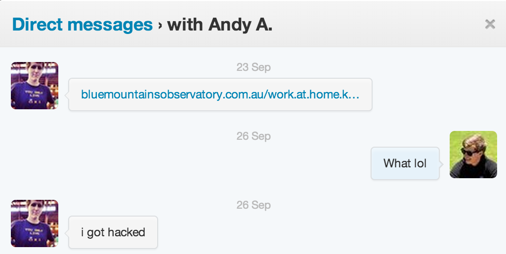
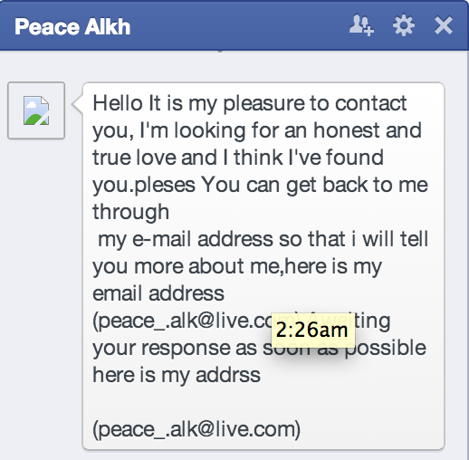
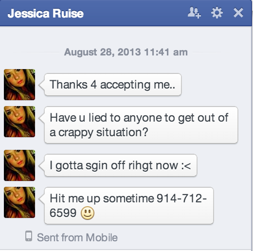

Jack Hanford
Hacker, Marketer, Technology Addict.
Are social networks the next botnet playground?
Twitter has been one of the most exciting companies to watch in Silicon Valley. Recently they had a quite successful IPO opening around $26 and closing around $40. At one of my recent jobs, I did a lot of twitter related marketing / community management so in a sense my job was to game the social network, for the companies benefit.
I have been using the social network since 2009 and to my belief, have had a unusual use case for the application - a RSS reader. In 2009 my passion was the iPhone jailbreak community. I simply followed a ton of big name blogs, developers and community members to get the most recent updates in one place, twitter. None of my friends had heard of twitter or used it when I signed up for it, so at the time it wasn't the social network everyone else was making it out to be. One day I noticed a jump in people I was following..
What is a botnet?
"A botnet is a collection of Internet-connected programs communicating with other similar programs in order to perform tasks. This can be as mundane as keeping control of an Internet Relay Chat (IRC) channel, or it could be used to send spam email or participate in distributed denial-of-service attacks. The word botnet is a portmanteau of robot and network." - Wikipedia.
According to recent reports one in ten twitter accounts are fake. Every social network has to fight spam, it's a vicious game of cat and mouse. Unfortunately the mouse (The people starting these botnets) have the advantage. Below are a few examples..

 
I watch who I follow on twitter, I don't exactly have a reason for this I just do. And the inspiration from this blog post came from me having to actively unfollow random accounts that I didn't follow in the first place. The first 5 times I had to unfollow accounts, I figured I granted some malicious application rights to my twitter account. So I went and cleared out the permissions, only granting a few well respected companies access to my twitter (Apple, Spotify, Instagram etc). Problem solved, right? Not exactly, My twitter account still follows people without my permission which leads me to think I am apart of some botnet.
Imagine if facebook automatically friended people for you, that would be a huge problem. I understand getting a few spam messages here and there, but I shouldn't need to be concerned about actively unfollowing spam accounts on twitter. I understand the cat and mouse game, I just feel like the cat is pulling ahead and I it makes me uncomfortable seeing as how our digital footprints are at risk.